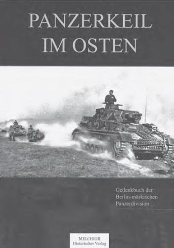

Militärhistorische Bücher:
„Drauf, dran und durch! “, so die Weisung an die Angehörigen der Berlinmärkischen Division, als am 22. Juni 1941 der Feldzug gegen die Sowjetunion begann. Mit ihren Fahrzeugen stießen sie weit in das Innere des Riesenreichs vor, drängten den Gegner zurück und zerschlugen ganze feindliche Armeen.
Ihr Weg führte die Soldaten u. a. über die Beresina und den Dnjepr, wo sie nach erbitterten Gefechten den Übergang erzwangen und gegen die Stalin-Linie weiter vorrückten. Auch an der größten Kesselschlacht der Kriegsgeschichte, dem Kampf um Kiew, waren die Landser in vorderster Front beteiligt. Orel, Tula und andere Städte gehörten ebenfalls zu Orten, an denen sie für „Führer, Volk und Vaterland“ kämpften und starben. Doch sollte ihr Weg noch lange nicht zu Ende sein.
Einen Eindruck von diesen Gefechten, die zu den härtesten des gesamten Krieges gehörten, liefert das vorliegende Buch, das eine besondere Rarität ist. Es ist die Reprint-Ausgabe des gleichnamigen Werkes aus dem Jahr 1942, das als Andenken an die Divisionsangehörigen ausgegeben wurde und nie im Buchhandel erhältlich war.
Äußerst lebendig schildern darin Kriegsberichterstatter des Verbandes die dramatischen Ereignisse der ersten Monate im Osten und verschiedene Anekdoten abseits des grausamen Alltags. Fesselnd berichten sie vom Vormarsch des Verbandes und machen das Schicksal der Soldaten greifbar. Dabei steht nicht nur die operative Nüchternheit der einzelnen Operationen im Vordergrund, sondern zusätzlich, was die Männer auf ihrem Weg erlebt haben – und sei es die Banalität einiger eingefangener Hammel und Kälber, um den Speiseplan zu erweitern.
Die vielen Bilder und das Geleitwort von Generaloberst Guderian runden das Werk ab. Ein Muß für jeden, der sich für zeitgenössische Militärgeschichte interessiert.
A.L.

Panzerkeil im Osten – Gedenkbuch der Berlin-märkischen Panzerdivision. Melchior – Historischer Verlag, Wolfenbüttel 2011. ISBN 978-3-942562-39-3, 240 Seiten, Euro 19,95